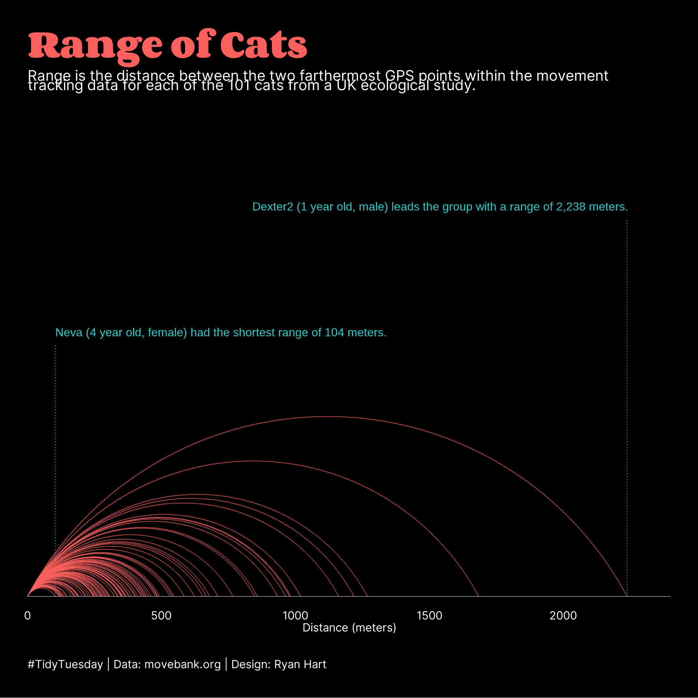
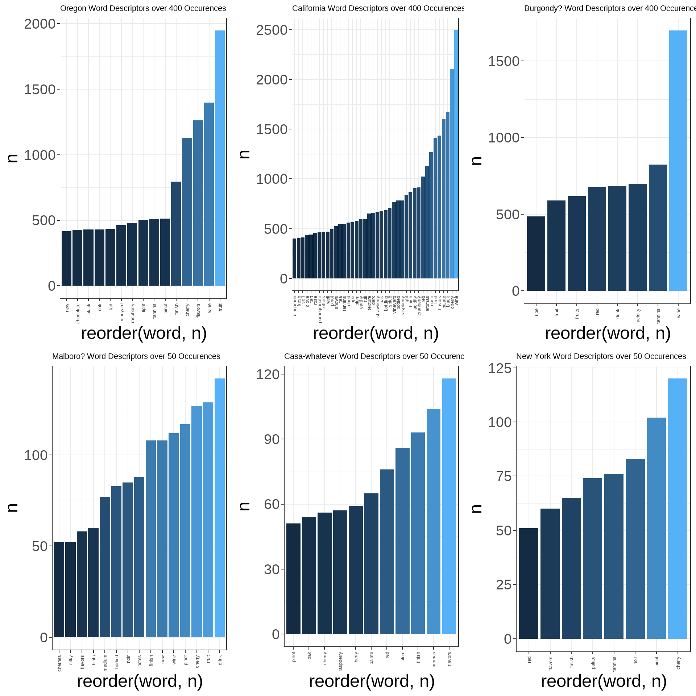
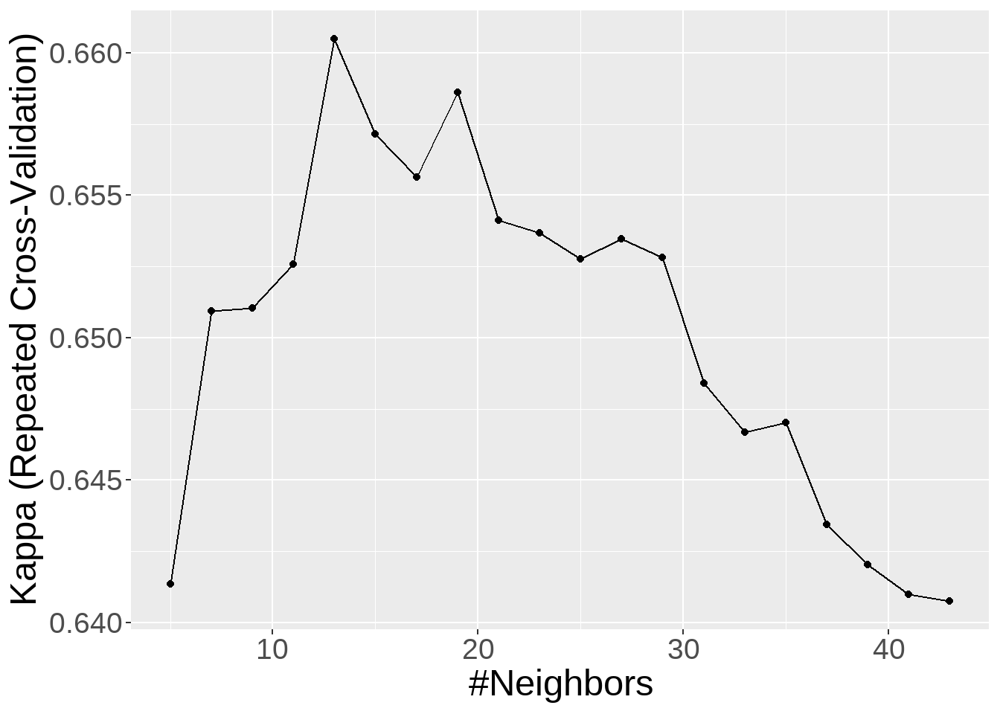

Projects
Project 1:
As an introductory project aimed at exploring the functionality of Quarto and Github I have replicated an entry from #tidytuesday For this example I am using code from a submission by @ryanahart with (code: https://github.com/curatedmess/TidyTuesday/blob/main/2023/01312023/cats.R)
@ryanahart’s plot:
Making the data easier to visualize (my version)…
Simplified the visual into a bar chart to align the information along a common axis and make each cat easier to compare.

Project 2:
An example of a KNN model that we are building and improving in class. The objective is to accurately predict the regional origin of a bottle of wine.
Understanding most frequently used regional descriptors…
How does the model perform across provinces?
Accuracy is very high for Burgundy, California, and Oregon regions. Smaller regions performed substantially worse, potentially due to significantly lower availability of data.
#PROJECT 1 Feature Engineering
set.seed(504)
wine_index <- createDataPartition(wine$province, p = 0.8, list = FALSE)
train <- wine[ wine_index, ]
test <- wine[-wine_index, ]
#10 fold cross validation
control <- trainControl(
method = "repeatedcv",
number = 5,
repeats = 3
)
fit <- train(province ~ .,
data = train,
method = "knn",#knn
tuneLength = 20, #the 30 different values for K
metric = "Kappa",
trControl = control)
confusionMatrix(predict(fit, test),factor(test$province))Confusion Matrix and Statistics
Reference
Prediction Burgundy California Casablanca_Valley Marlborough New_York
Burgundy 214 7 0 4 2
California 4 699 7 16 10
Casablanca_Valley 0 0 8 0 1
Marlborough 0 1 0 7 1
New_York 0 0 0 1 2
Oregon 20 84 11 17 10
Reference
Prediction Oregon
Burgundy 16
California 136
Casablanca_Valley 1
Marlborough 0
New_York 0
Oregon 394
Overall Statistics
Accuracy : 0.7914
95% CI : (0.7711, 0.8106)
No Information Rate : 0.4728
P-Value [Acc > NIR] : < 2.2e-16
Kappa : 0.6678
Mcnemar's Test P-Value : NA
Statistics by Class:
Class: Burgundy Class: California Class: Casablanca_Valley
Sensitivity 0.8992 0.8837 0.307692
Specificity 0.9798 0.8039 0.998786
Pos Pred Value 0.8807 0.8016 0.800000
Neg Pred Value 0.9832 0.8851 0.989176
Prevalence 0.1423 0.4728 0.015541
Detection Rate 0.1279 0.4178 0.004782
Detection Prevalence 0.1452 0.5212 0.005977
Balanced Accuracy 0.9395 0.8438 0.653239
Class: Marlborough Class: New_York Class: Oregon
Sensitivity 0.155556 0.076923 0.7203
Specificity 0.998771 0.999393 0.8739
Pos Pred Value 0.777778 0.666667 0.7351
Neg Pred Value 0.977163 0.985629 0.8654
Prevalence 0.026898 0.015541 0.3270
Detection Rate 0.004184 0.001195 0.2355
Detection Prevalence 0.005380 0.001793 0.3204
Balanced Accuracy 0.577164 0.538158 0.7971Which K value is ideal?
This graphs kappa performance of the model over a range of K values. Kappa is a measure of model performance against random chance classification. We want to achieve the highest kappa value possible.
ggplot(fit, metric="Kappa")